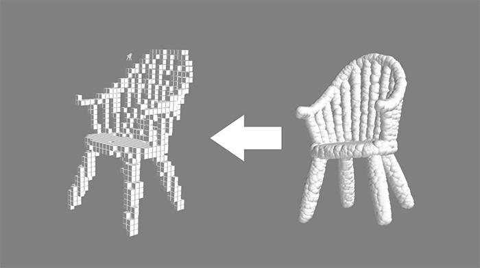
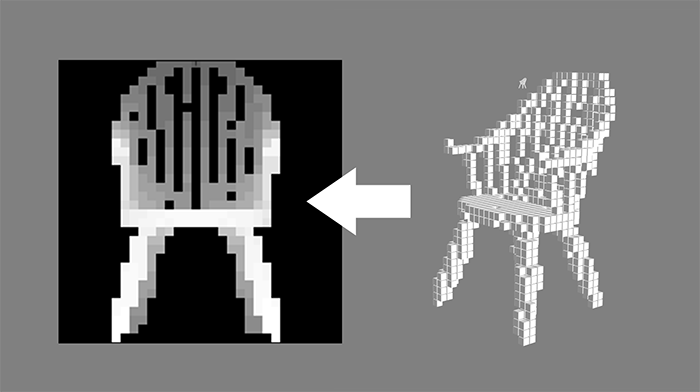
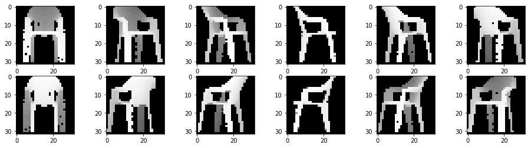
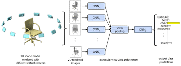
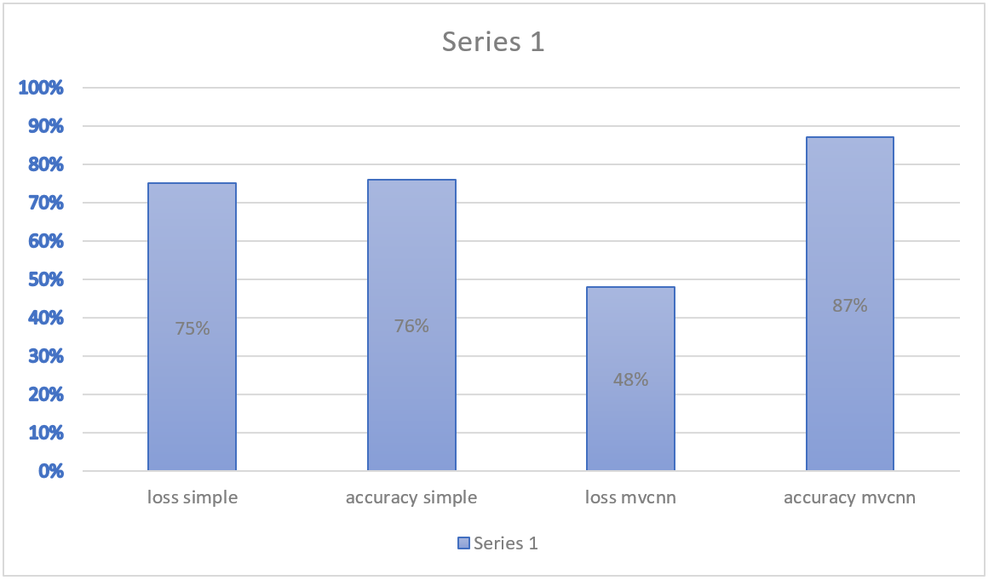
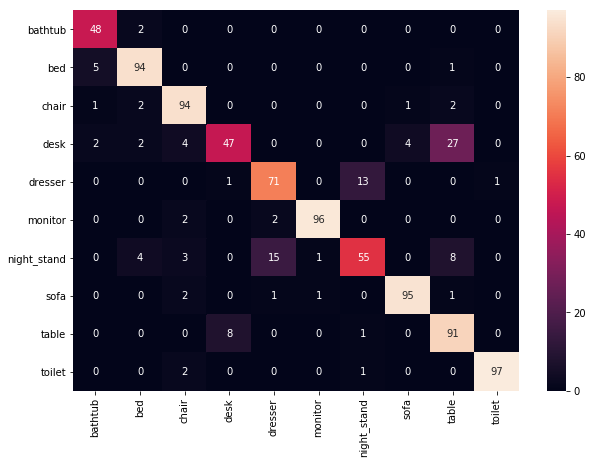

3D Object Classification via MVCNN
Project by Ori Yaish and Amit Turner .
In this project we will be implementing the research "Multi-view Convolutional Neural Networks for 3D Shape Recognition" using Python and keras (with Tenserflow back-end) using additional libraries such as numpy.
Part 1 - points cloud to depth map
Points Cloud to volume
the first task was taking a point cloud represented by 3d points (vec3), for that we learned using numpy tools and syntax. "dumb" solutions took a long time for each cloud as it needed to run on a loop of the cloud points, so a diffrent method was needed. we chose creating an zeros arrays the size of 32X32X32, and inserting all of the points as 1's in the array.
using numpy efficient commands we inserted the cloud as volume with this line:vol[locations[:,0],locations[:,1],locations[:,2]] = 1.0def point_cloud_to_volume(points, size=32):
vol = np.zeros((size,size,size))
locations = np.copy(points)
locations[:] *= (size-1)
locations = locations.astype(int)
locations[locations >= size] = 0.0
locations[locations < 0] = 0.0
vol[locations[:,0],locations[:,1],locations[:,2]] = 1.0
return volVolume to depth map
using numpy argmax command we were able to create a depth map photo size 32X32 from each volume object by looking on the z axis only and taking the "closest" block containing his distance from 0. when no block is in axis, we simply put 0 in our map. representing it with "interpolation='nearest'" creates the desired result - a depth map of the object facing us. this is our function:
def vol2depthmap(volume_array, bg_val=40):
vol = volume_array.argmax(2)
vol[vol == 0] = bg_val
return vol Part 2 - multi-view for each 3d object
in order to implement the paper, we need to take each object and create 12 depth maps. one for each side view, moving 30 degrees each time. the easiest method would be moving the point cloud to the axis's center (0,0,0), rotating it by 30 around the Y axis, and bringing it back to it formet position.
the steps are:- Translate all the points by (-0.5,-0.5,-0.5)
- roatating by 30 around (0,1,0) - using dot funtion with a 30 degrees rotation matrice
- Translate back all the points by (0.5,0.5,0.5)
there are many ways to implement it. we started by using "dumb" loops, and as we saw we have thusanands of objects with huge matrices we looked for a better solution. one was using the numpy function apply_along_axis which takes an array and run along an axis, and applying a function of our choosing. we ran along the cloud map rows (which represent each point) and ran the function which do the 3 steps above. using this method each object took around 300ms to run. and around an hour to two depending on the computer to run all the objects (3991)
We needed a better solution. after learning more and better numpy functions, and changing the use of apply_along_axis with simple math: now our function takes the whole cloud and translates it at once with subtract() and add(), and for the rotation^T with our rotation matrice. and to that we Transform and gets our rotated cloud.
rotation by 30 degrees matrice:| 1.0000000 | 0.0000000 | 0.0000000 |
| 0.0000000 | 0.8660254 | -0.5000000 |
| 0.0000000 | 0.5000000 | 0.8660254 |
def rotate_cloud(x):
y = np.subtract(x,0.5)
y = rot_30.dot(y.T).T
y = np.add(y,0.5)
return y


we now have some data to work with, its time to start working on the CNN.
Part 3 - using keras to build a newron network
At the beginning we tried to train out network with one 2d picture (our depth map Picture) And to understand if the network is learning. Moreover, it will give us indication for our reshape contribution. Reminder: our dataset is ModelNet10 and we have a set of 3991 3d pictures for our train and 908 3d pictures for our validation. So we give the network this data:We run the network for 30 epochs and those are the result we get:
In part 2 we described how we reshape the 3d object into 12 2d pictures, Now we are going to use this crucial data to build a big network that will learn from it. Our way to make it work is to take every picture from the 12 2d picture and to build a small model for each of them after using a split function. After we iterate all the angles, we merge them together by maximum pooling and this we be big model (we add some layers to the big model after pooling)
Now our array is a (3991, 12, 32, 32,1) array for our training and (908, 12, 32, 32, 1) array for our validation. we run the network for 30 epochs and those are the result we get:
We see now that our accuracy improved by more than 10% and loss decreased 
We build a confusion matrix to our validation set in order to allow visualization of our algorithm: 
Explanation for the results: we see in the diagonal line the presentage of times that our algorithm recognized the object. We see that for unique shape like toilet or monitor our algorithm works very good but when two shapes are alike, there is some deviation ( to tell the truth, every one do not know how to distinguish table from desk and dresser from nightstand (-: